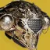

推荐者：
稻叶苍蝇头响指术
 术士 · 棱镜 · 创意S29 · 凯旋纪念碑
术士 · 棱镜 · 创意S29 · 凯旋纪念碑
通过庆典飞行和响指速转超凡从而打出更多响指
适用环境
# 苍蝇头响指术 推荐人：稻叶 描述：通过庆典飞行和响指速转超凡从而打出更多响指 更新：2026.9.10 场景：宗师/终极 分支：棱镜 强度：创意 核心：黎明副歌 ## 审核意见 很建议副手玩纯五度故我在 ## 职业 职业：术士#row:elements/class-abilities/分节/术士 超能：烈焰之歌#2274196884 星相：编织者之唤#790664810、地狱火#790664814 碎片：保护琢面#2626922120、使命琢面#124726498、黎明琢面#2626922126、勇气琢面#2626922124、希望琢面#2626922122 手雷：线虫手雷#4228170798 近战：焚烧响指#1470370538 职业技能：凤凰俯冲#1444664836 ## 武器 传说武器：庆典飞行#4019651319 | 切割#923806249、羸弱能量球#243981275 传说武器：韦兰迪夫-D#1361871430 | 空中扳机#1421772400 ## 护甲 异域护甲：黎明副歌#3767088557 套装：玻璃拱顶#set:741162535 2 件 × 玻璃拱顶#set:741162535 4 件 头盔：重型弹药搜寻者#554409585、特殊武器弹药搜寻者#2595839237、谐振虹吸#3832366019 护臂：回天掌法#2447449706、回天掌法#2447449706、专注打击#3685945823 胸甲：缚丝弹药生成#4287822553、谐振弹药生成#1971149752、震荡阻尼器#3719981603 腿部：缚丝回收器#2257238439、谐振回收器#1301391064、武器洗礼#4046357305 职业物品：特殊终结技#4004774872、职业洗礼#1193713026、强力吸引#11126525 ## 神器 神器：废墟石板 模组：瓦解能量球#3585856464、元素虹吸#3585856466、邪恶编织#2596646296、群敌飞梭#2596646301、弹中藏金#2596646302、崩解#1319563985、元素超充器#1319563988 ## 六维 六维：生命 ~ ｜ 近战 70～100 ｜ 手雷 70～100 ｜ 超能 ~ ｜ 职业 80 ｜ 武器 150～180 ## 注解 高压环境注意上割裂保证生存
职业
武器
神器模组
护甲
- 生命~
- 近战70～100
- 手雷70～100
- 超能~
- 职业80
- 武器150～180
注解
高压环境注意上割裂保证生存